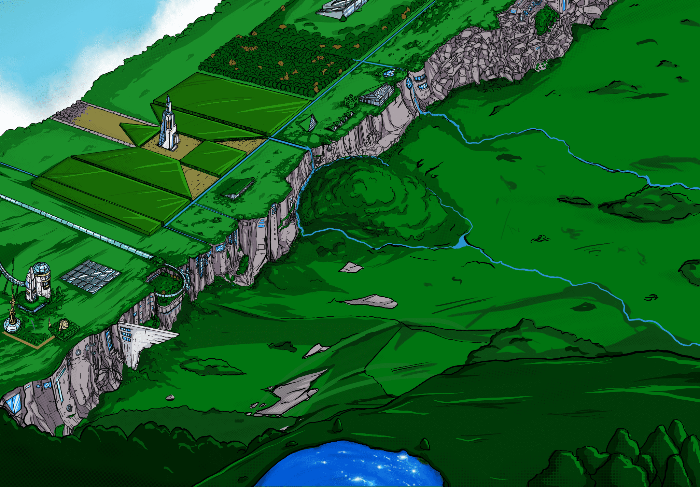
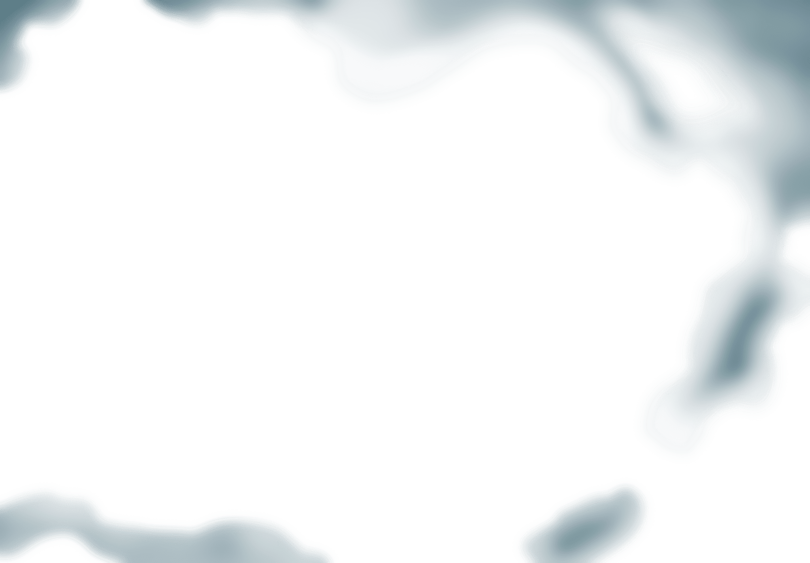
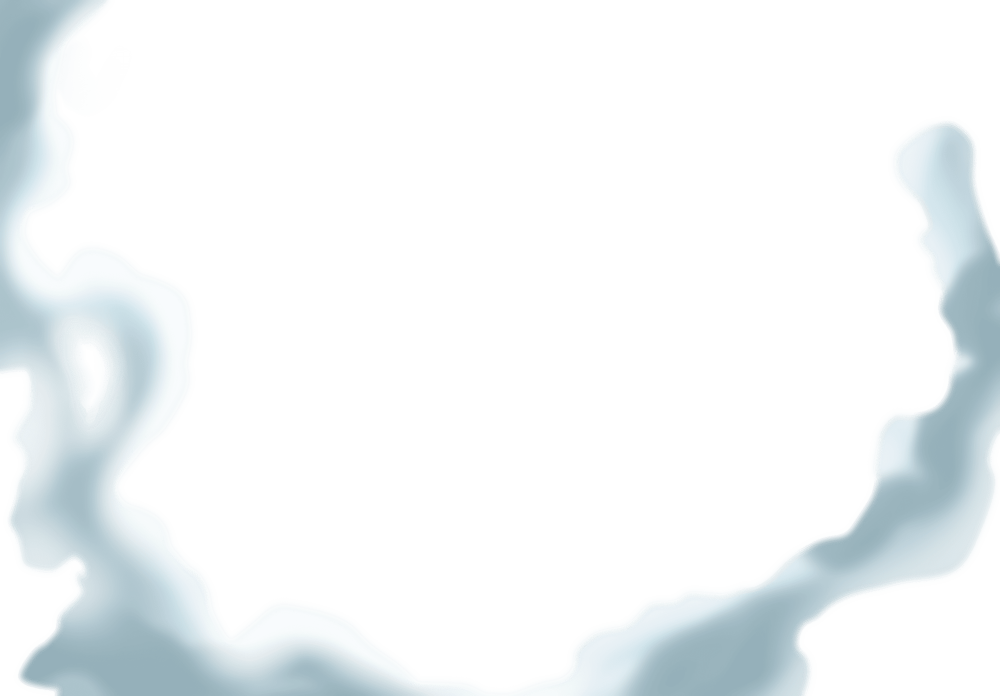
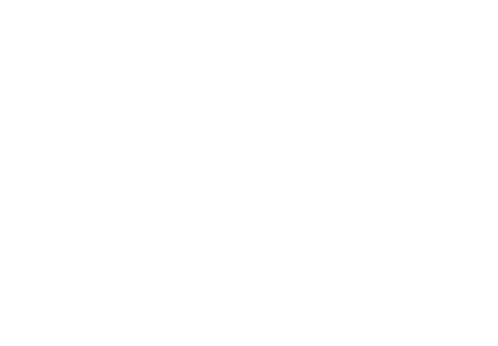
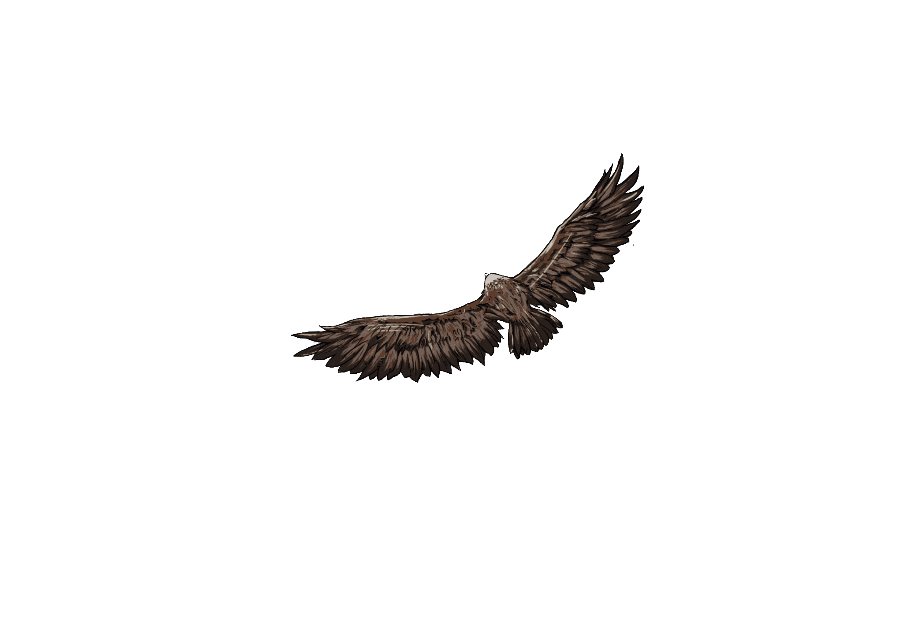
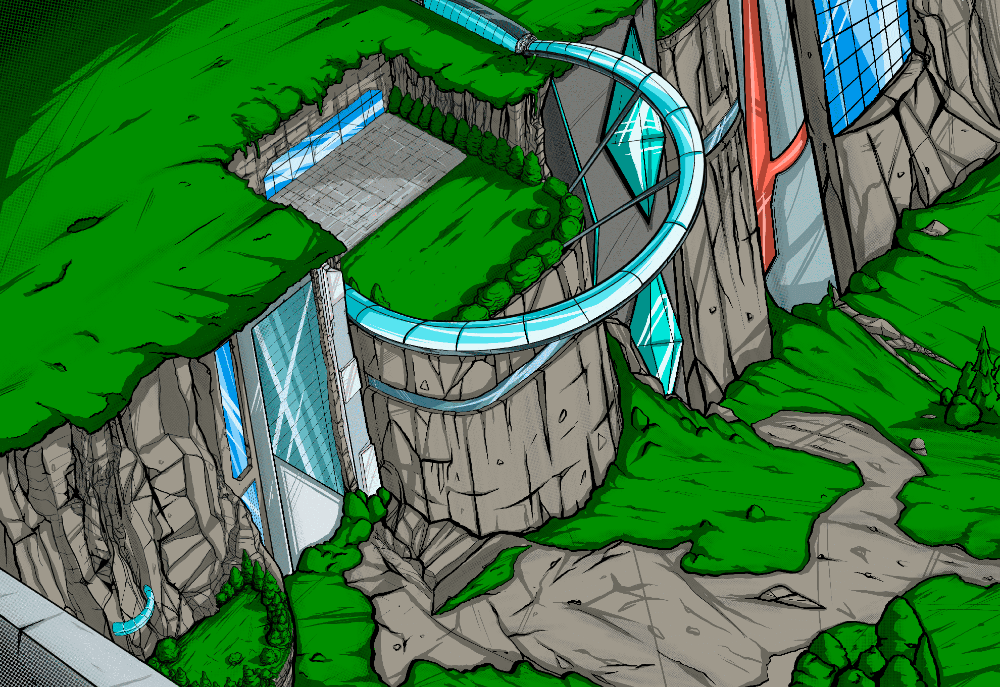
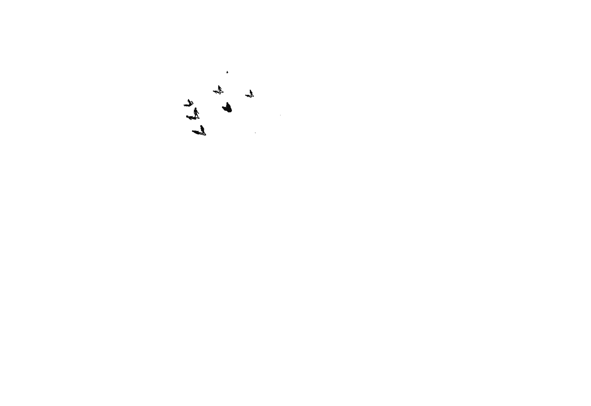
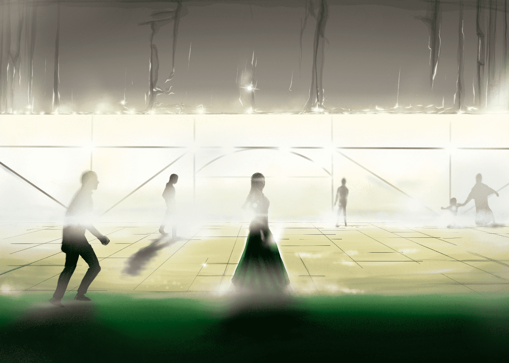
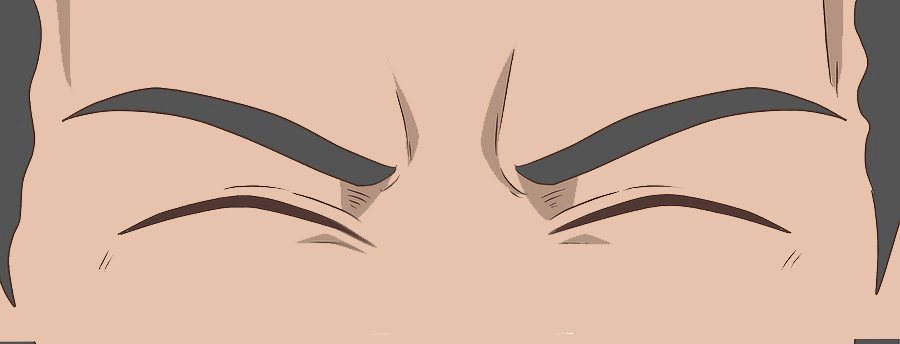

МНЕ СНЯТСЯ СЧАСТЛИВЫЕ СНЫ. В НИХ НЕБО ЧИСТОЕ И НЕ ЗАПЯТНАНО ГРЯЗНЫМ ДЫХАНИЕМ ГОРОДА.
ОГРОМНЫЕ ЗЕЛЁНЫЕ РАВНИНЫ ВСТРЕЧАЮТСЯ С МОГУЧИМИ ГОРНЫМИ ХРЕБТАМИ.
    
В ЭТИХ МЕСТАХ ЖИВУТ ЛЮДИ, ЛИЦА КОТОРЫХ НЕ СПРЯТАНЫ ЗА ВИЗОРАМИ И МАСКАМИ.
 

В МОИХ СНАХ МАМА ВСЁ ЕЩЕ ЖИВА.
